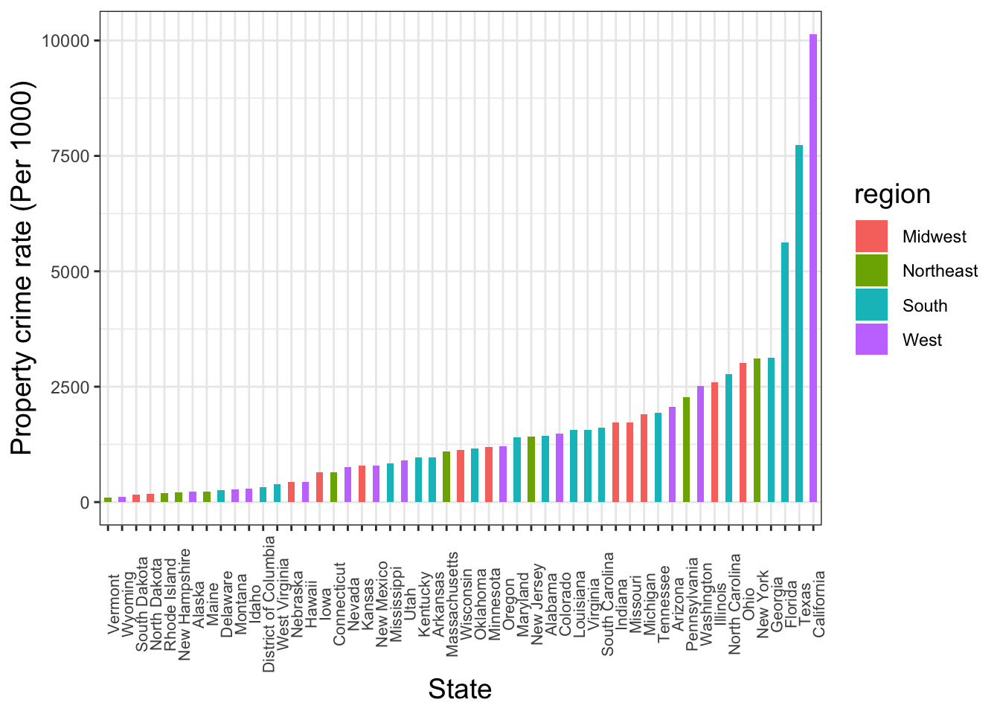
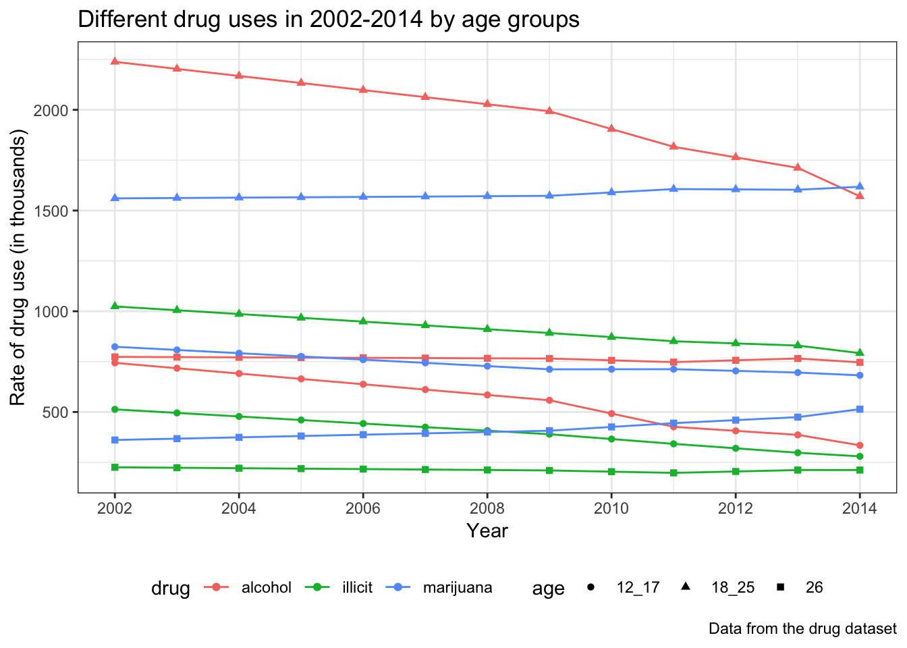

Substance abuse is characterized by the repeated use of addictive drugs that changes neuroadaptations in the neural system, resulting in the withdrawal syndrome after the drug effects diminish (White, 2004). A study of arrestees in Maricopa County, Arizona suggests that diverted medical marijuana users were more likely to commit property crime, violent crime, Driving Under the Influence (DUI), and drug selling than nonusers (Katz et al., 2018). Therefore, not only substance abuse represents a significant public health problem, but alcohol and illicit drug use are also associated with criminal activities in the United States (Jaegers et al., 2018). For example, the United States Drug Enforcement Administration (DEA) reports a majority of drug related crimes are committed by drug users (Resignato, 2000), and the evidence of high rates of drug misuse among criminal samples suggests an association between crime and illegal drug use (Rolfe et al., 2000). Furthermore, studies have shown more crime-related activity during periods of addiction than non-addiction periods (Rolfe et al., 2000). Substance use disorders (SUDs) as defined by the Diagnostic and Statistical Manual of Mental Disorders, Fourth Edition (DSM-IV) for alcohol, marijuana, and pain relievers are associated with violence (Grant et al., 2018). Motivation for committing property crimes can be attributed to economic problems. For instance, many heroin addicts finance their habits through committing property crimes, especially theft. (Rolfe et al., 2000). For violent crimes, the majority of murders linked to drug addicts are associated to the drug trade (Harrison & Gfroerer, 1992).
There is a substantial decline in both the violent crime rate and property crime rate since 1993 (“5 facts about crime in the U.S”, 2018). However, the FBI reported a 7% increase in the violent crime rate between 2014 and 2016, with a 20% increase in the murder rate (“5 facts about crime in the U.S”, 2018). Consistent with the decrease in crime rates, past year cocaine use has fallen since 2002 (“Nationwide Trends”, 2015). Both marijuana and illicit drugs use increased slightly after 2008 (“Nationwide Trends”, 2015), posing a question as whether the increase in murder is a consequence of marijuana and illicit drugs use. Although the relationship between drug use and crime has been studied in detail these years, the influence of drug use on different types of crime remains unclear. The main purpose of the study is to identify the contribution of drug use on various types of crime.
1. Crime dataset
1.1 Data description
The crime data was collected by FBI’s Uniform Crime Reporting (UCR) Program, which recorded different types of offenses by states, regions, and geographic divisions. Each column represents a type of crime and values are recored as rate per 100,000. There are two categories of crimes: (1) violent_crime_number/rate: violent crime involves force or threat of force against the victims. It includes four types of offenses: murder and nonnegligent manslaughter, rape, robbery, and aggravated assault. Columns containing murder and manslaughter, rape, robbery, and aggravated assault are subdivisions of violent crime. (2) Property_crime_number/rate: property crime indicates offenses involving property lost without force or threat of force. It includes three types of offenses: burglary, larceny-theft, and motor vehicle theft. Columns containing burglary, larceny-theft, and motor vehicle theft are subdivisions of property crime.
1.2 Data cleaning
The crime dataset was loaded from the google sheet, detailed data cleaning steps were as follow:
column names were cleaned up using ‘janitor’ package and the subscripts of text were manually deleted from the original dataset. Column ‘area’ was converted from character to factor. Commas were removed in columns containing numbers and rates, followed by transformation from character to numeric. Area names were filled where appropriate. ‘rape_legacy’ variable was deleted as it contains overlapping information with ‘rape_revise’ columns. Additionally, NAs were removed, and data subsets by states, region, and geographic division were created.
2. Drug dataset
2.1 Data description
The drug data is collected by The National Survey on Drug Use and Health (NSDUH), an annual survey conducted in all 50 states and the District of Columbia. There are approximately 70,000 participants and questions on tobacco, alcohol, and drug use, mental health and other health-related issues are asked (What is NSDUH, 2018). The data consists of three age groups, which are age 12 to 17, age 18 to 25, and age 26 and above. Our study focues on substance abuse (alcohol, marijuana, cocaine, and illicit drugs).
2.2 Data cleaning
The dataset can be accessed through its original website, detailed data cleaning steps were as follows:
Firstly, we selected variables of interest, which are substance abuse of marijuana, illicit drug (cocaine), and alcohol with state and year columns. Next the age information was extracted from the column name into a unique column by gathering all the columns except year and state, followed by using string_replace and separate function, resulting in two columns of age and rate respectively.
3. Education data
In order to take education rate as a possible confounder in regression models, percentage of high school graduation in each state was extracted from a wikipedia website and added to drug data.
4. Race data
Taking the race proportion into consideration, we added the proportion of whites as a potential confounder. It was extracted from Kaiser Family Foundation and added to drug data.
In order to visualize how the crime rates differ in different areas, regions and states, we made a barplot to show the distribution of crime rate at different geographic levels.
Violent Crime Rate Distribution across states
Property Crime Rate Distribution across states

Both crime rates exhibit state differences. District of Columbia and California have the highest violent crime rate and property crime rate respectively. In general, the property crime rate is dramatically higher than violent crime rate.
The trend of different drug uses in 2002-2014 by age groups

From the plots, the highest rates of alcohol, illicit drugs, and marijuana are among people aged 18 to 25. There is a decreasing trend in alcohol abuse among people aged 12 to 25. The rates of both illicit drugs–cocaine and marijuana, in general, remain constant throughout years.
Process of building shiny for drug data
There were 51 states, three types of drugs (marijuana, illicit drug, alcohol), three age groups (12-17, 18-25, 26 or above) and four or five degrees in each drug (abuse, binge, dependence, need treatment, use). The main purpose was to analyze the distribution of the degree of addiction in each drug in each state throughout years and the distribution of addiction degrees of each drug stratified by age. Moreover, there were data for rate of perception risk in marijuana and alcohol use, thus we analyzed the trend of perception risk in each age group and in each state for selected drugs. Three interactive charts in total were created for exploratory purpose.
In chart A, specific state and drug type have been selected, and then an interactive bar chart with “year” as x axis, “rate” as y axis was built with different color representing the degree of drug addiction. In chart B, the distribution of perception of risk for alcohol and marijuana by three age groups were plotted across years. In chart C, the distributions of drug rates with degrees of drug addiction across year were plotted for each drug type and for each age group, allowing investigation of the pattern of specific drug addiction level.
By showing all these three types of distributions, the reader could explore the detailed information of the drug use in U.S. and its pattern across years.
Finally, a shiny map of the United States was made to explore the distribution of each drug use in 2015 and 2016 respectively, and the color gradient corresponds to drug rate. The variables selected for the map are past year alcohol abuse, dependence, and need treatment; past year illicit drugs cocaine used, dependence, need treatment; and past year marijuana used. The aggragated results were obtained by classfing these variables into three categories–alcohol, illicit drugs, and marijuana.
Surprisingly, the rate of perception risk of marijuana was reduced over years in all age groups, whereas alcohol rate remained constant over years. The trend indicates the public awareness for marijuana as harmful decreases with time. We expected higher education to be negatively correlated to marijuana use.
Process of building shiny for crime data
The crime data consists of a total of nine types of crimes (violent, murder and manslaughter, rape, robbery, aggravated assult, proporty, burglary, larceny and theft, motor vehicle theft) and two year points (2015 and 2016). State abbreviation was added as a new column in the crime data.
Eighteen barplots were created to demonstrate the distributions of nine types of crime rates across states in 2015 and 2016 respectively, corresponding maps were made for visualization.
Linear Regression
We are interested in the association between the crime rate and the drug use, so we undertake multivariable linear regression to test the significance of the estimated coefficients.
The outcomes are the rates of ten crime types, the amount of drug (illicit drug, alcohol and marijuana) use, race proprtion of white people, rate of high school graduation are the predictors.
We checked the overal distribution of outcomes and variables using package “PerformanceAnalytics”. We expected to have a skewed distributions of the outcomes in terms of small sample size, however, the distributions were roughly normal and transformation was not necessary. Therefore, the original unit of the outcome was used.
We fitted the models and obtained the results for each regression.
We filtered the estimated coefficients with respect to a p-value of 0.05. We found that two outcomes (murder/manslaughter, robbery) are significantly corelated to drug use (illicit drug and marijuana). Then we ran the model diagnostics for these two multivariable linear regression models. There were two leverages and they were also influential points (Cook’s distance > 0.5). These two influential points were from state “Hawaii” and “District of Columbia”.
We fitted models again without Hawaii and District of Columbia.
The R-squared and adjusted R-squared increased by approximately 30%, indicating a higher goodness of fit. However, the estimated coefficients of drug use became nonsiginficent (p-value > 0.05).
After we fitted the models and obtained the results for each regression, we filtered the estimated coefficients with p-value less than 0.05, we found that there were two significant outcomes (murder/manslaughter, robbery) related to drug use (illicit drug and marijuana). Then we ran the diagnostics for these two multivariable linear regression models. The models satisfied assumptions of constant variance and normality.
In conlusion, with all 50 states and District of Columbia, at 0.05 significant level, murder/manslaughter is negatively associated with illicit drug, while robbery and murder/manslaughter are positively associated with marijuana use. Without data from Hawaii and District of Columbia, at 0.05 significant level, the race proportion of white people and percentage of high school graduation become the main predictors. They are both negatively related to the outcomes (murder_manslughter_rate, robbery_rate, violent_crime_rate, aggravated_assault_rate, motor_vehicle_theft_rate, property_crime_rate, burglary_rate).
For murder crime, our regression model fitted with the full crime data suggests that murder is weakly associated with marijuana, illicit drug use, whites and the percentage of high school graduation. The model fitted without Hawaii and District of Columbia illustrate negative associations between whites and murder, and between percentage of high school graduation and murder respectively. The estimated coefficients of these significant predictors are close to zero, implying neither drugs, race, nor education affects murder. For robbery crime, the significant predictors are marijuana and whites in the model fitted with the full crime data. Whites is the only significant predictor in the model fitted without Hawaii and District of Columbia. The estimated coefficients for whites are relatively high in both models, indicating whites are less likely to commit homicide. A study implies that the prevalence of illicit drug use is highest among whites and lowest among African-Americans (Jaegers et al., 2018). Thus, it is reasonable to assume whites to have a higher crime rates, given the positive correlation between drugs and crimes. However, our results suggest that drugs are not the determining factors for crime, consistent with our finding that whites are less likely to commit crime.
Our regression models indicate two outcomes, murder and robbery, are both affected by race, consistent with a previous study that murder and robbery trends are affected by similar factors (Rosenfeld & Blumstein, 2008). In the study, age was identified as an contributor to the murder and robbery crimes rise of the 1960s and 1970s since most postwar babies reached high-crime ages 15 to 20 at that time. Another factor affecting robbery and murder starting from 1985 was the recruitment of young people into crack cocaine markets. The decline in murder and robbery trends between 1992 and 2000 was due to aggressive policing focused on young people with guns and decline in demand for cocaine by new users. From 2000 onwards, murder and crime rates trend became flat. The study highlighted a list of factors that could be contributing to changes in murder and robbery trend are education, social services, police forces, gun control (Rosenfeld & Blumstein, 2008). Since factors attributing to crime vary among years, factors contributing to recent violent crime trend other than race remain puzzling. Future studies of factors attributing to violent crime may be insightful.
During the exploratory analysis, the perception risk of marijuana declined throughout years, implying a decrease in public awareness of the harm of marijuana. It is consistent with our finding that the increase in marijuana use is positively associated to violent crimes.
The main limitation of our study is the small sample size since crime data only contains one rate per state. The significances of our predictors may increase with a larger sample size. In addition, there may exist significant associations among other crime types with our predictors. Furthermore, our models R squared improved substantially after the removal of Hawaii and District of Columbia. It is necessary to figure out whether these two places do have different patterns of drug use, race, education and crime or it is recording error that should be removed. Another point is that the adjusted R squared is lower than R squared, suggesting some predictors in our model are not contributing to crime rate. Another limitation of our study is that our models did not test for interactions. For example, interactions may exist between education and drug uses. Therefore, the next step of our study should focus on interactions between drug use, race, and education, as well as adding other factors like policy into our models.
Reference
Andrew J. Resignato (2000) Violent crime: a function of drug use or drug enforcement? Applied Economics, 32:6, 681-688, DOI: 10.1080/000368400322291
Gossop, M., Marsden, J., Stewart, D., & Rolfe, A. (2000). Reductions in acquisitive crime and drug use after treatment of addiction problems: 1-year follow-up outcomes. Drug and Alcohol Dependence, 58(1-2), 165-172.
Harrison, L., & Gfroerer, J. (1992). The intersection of drug use and criminal behavior: Results from the National Household Survey on Drug Abuse. Crime & Delinquency, 38(4), 422-443.
Bennett, T. (1998). Drugs and crime: The results of research on drug testing and interviewing arrestees. London: Home Office.
Cheon, H., Decker, S. H., & Katz, C. M. (2018). Medical Marijuana and Crime: Substance Use and Criminal Behaviors in a Sample of Arrestees. Journal of Drug Issues, 48(2), 182-204.
Harford, T. C., Yi, H. Y., Chen, C. M., & Grant, B. F. (2018). Substance use disorders and self-and other-directed violence among adults: Results from the National Survey on Drug Use And Health. Journal of affective disorders, 225, 365-373.
Vaughn, M. G., Salas-Wright, C. P., Cordova, D., Nelson, E. J., & Jaegers, L. (2018). Racial and ethnic trends in illicit drug use and binge drinking among adolescent and young adult offenders in the United States. Journal of Criminal Justice, 59, 71-80.
Koob, G. F., Ahmed, S. H., Boutrel, B., Chen, S. A., Kenny, P. J., Markou, A., … & Sanna, P. P. (2004). Neurobiological mechanisms in the transition from drug use to drug dependence. Neuroscience & Biobehavioral Reviews, 27(8), 739-749.
White, J. M. (2004). Pleasure into pain: the consequences of long-term opioid use. Addictive behaviors, 29(7), 1311-1324.
Seddon, T. (2000). Explaining the drug–crime link: Theoretical, policy and research issues. Journal of Social Policy, 29(1), 95-107.
5 facts about crime in the U.S. (2018). Retrieved from http://www.pewresearch.org/fact-tank/2018/01/30/5-facts-about-crime-in-the-u-s/
Nationwide Trends. (2015). Retrieved from https://www.drugabuse.gov/publications/drugfacts/nationwide-trends
What is NSDUH. (2018). Retrieved from https://nsduhweb.rti.org/respweb/homepage.cfm
Blumstein, A., & Rosenfeld, R. (2008, December). Factors contributing to US crime trends. In Understanding crime trends: Workshop report (pp. 13-43). Natl Academy Pr.